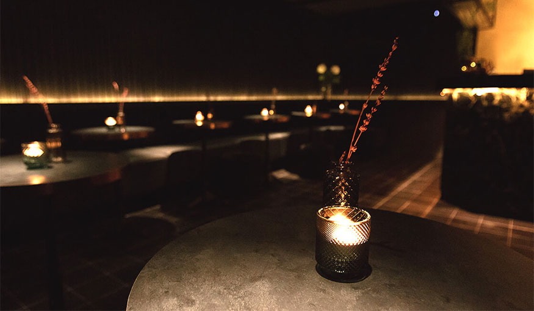

Qui sommes-nous ?
Façonnée par la culture de la Chine ainsi que celle de la France, l’équipe de Jiniss porte une double culture. Dès la naissance, Jiniss décide d’être une marque différente — une entreprise qui non seulement offre la cuisine saine et gourmande, mais aussi favorise les échanges culturelles entre les publics. Vous l’aurez compris, c’est l’endroit parfait pour découvrir les épices de la région de Sichuan dans des plats traditionnels de nouilles et de raviolis.
Découvrez notre Menu